Act II: Literature review
On the shoulders of giants 
Université de Lorraine
2024-06-12
Learning objectives of today
- 🧠 Knowledge :
- Sensibilization on what a literature review process is.
- 🔨 Know-how :
- Search on pertinent scientific databases
- How to start to read scientific article
- Crical thinking of research papers
- Visualization of literature review features.
- ✍Competence :
- Be able to structure a literature review.
Where are we in the research process?
Agenda for today
Where are we in the research process?
What kind of type of research can we do?
Understanding the paper structure part II
Structuring your paper
Research in the context of France
Mental model for the research

As Example at ERPI
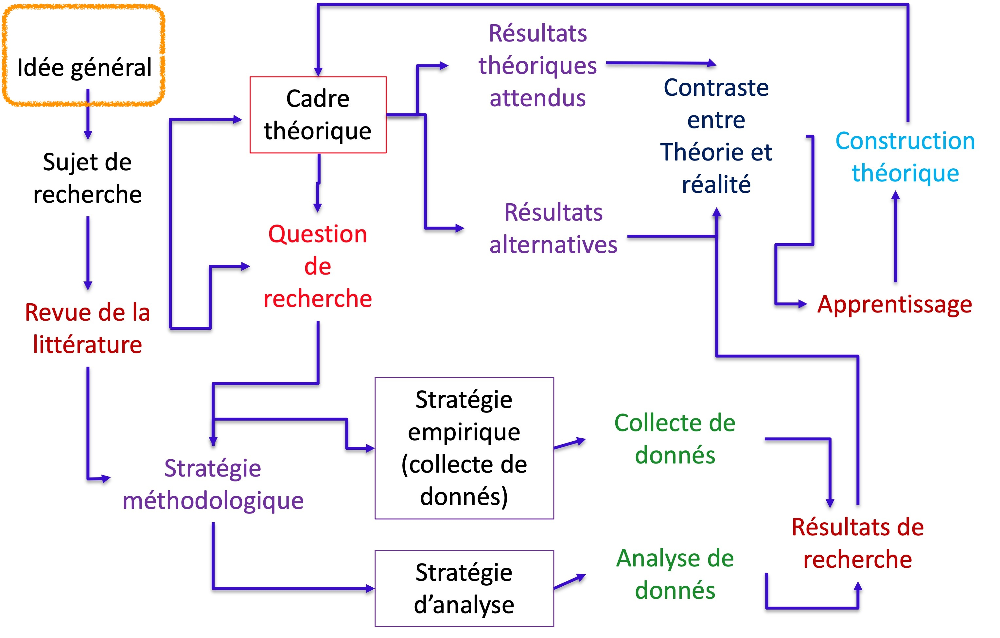
General Idea
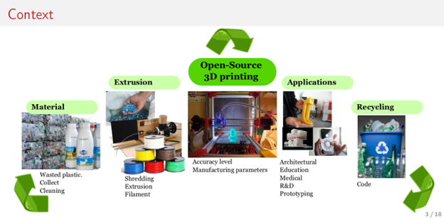
From General Idea → Questions
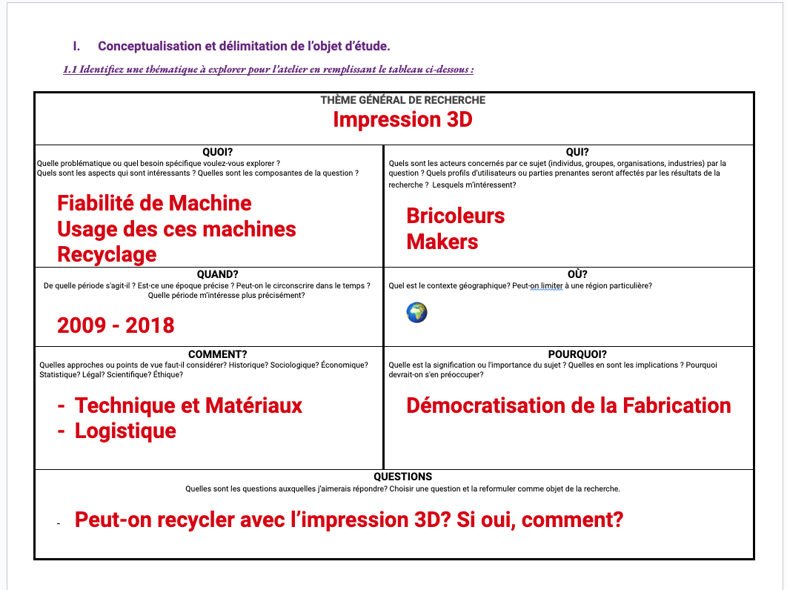
From Questions → Concepts
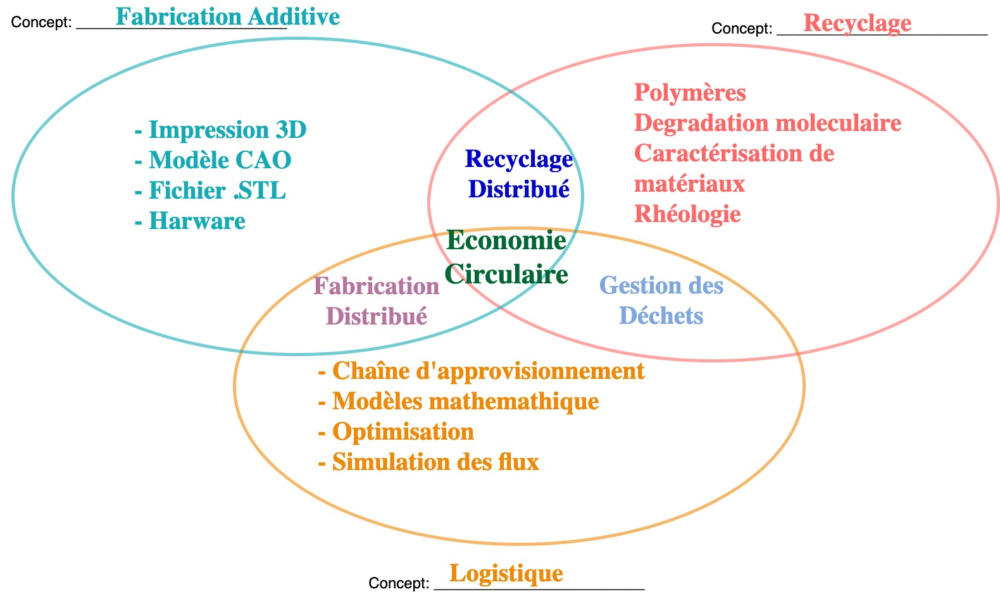
From Concepts → Research question

From Research question → Bibliometrie
1. Performance Analysis
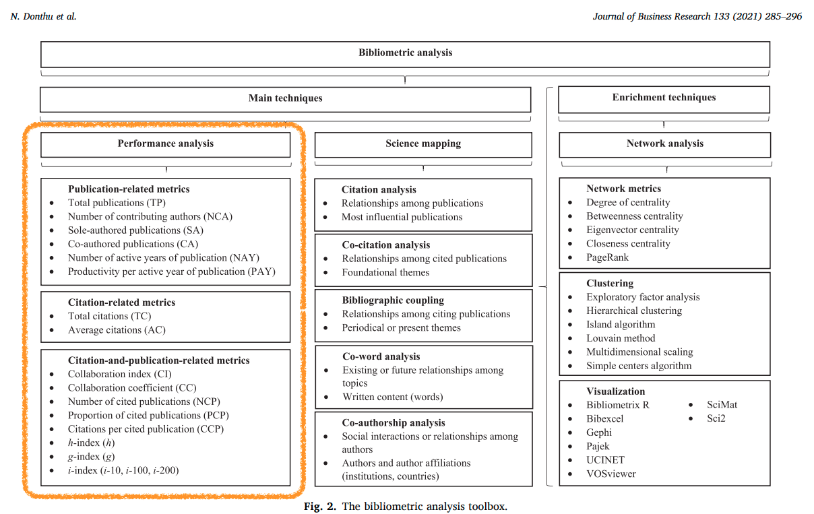
Document sous ARCHE
Source: Donthu, N., Kumar, S., Mukherjee, D., Pandey, N., Lim, W.M., 2021.
How to conduct a bibliometric analysis: An overview and guidelines.
Journal of Business Research 133, 285–296.
From Research question → Bibliometrie
1. Performance Analysis → Indicateurs sur le publications
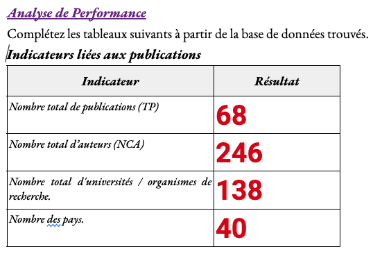
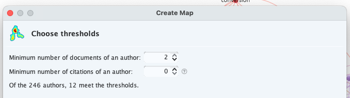
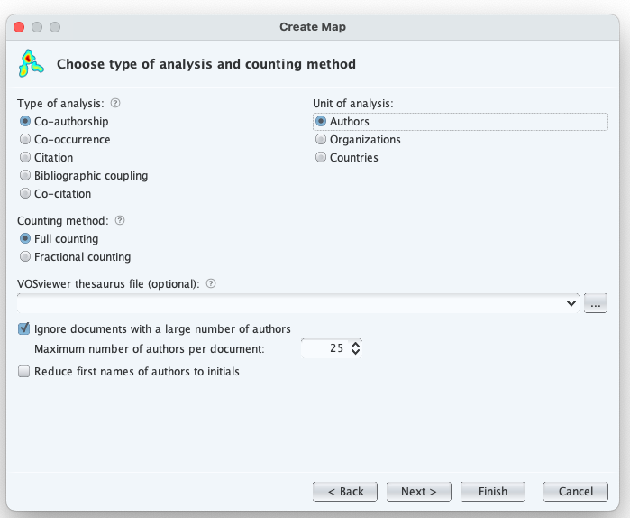
From Research question → Bibliometrie
1. Performance Analysis → Indicateurs sur les citations
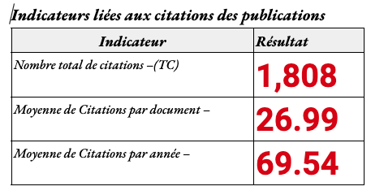
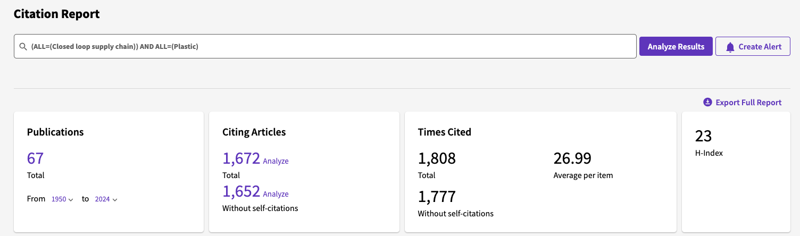
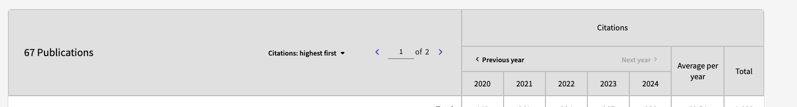
From Research question → Bibliometrie
1. Performance Analysis → Indicateurs liées aux publications-citations
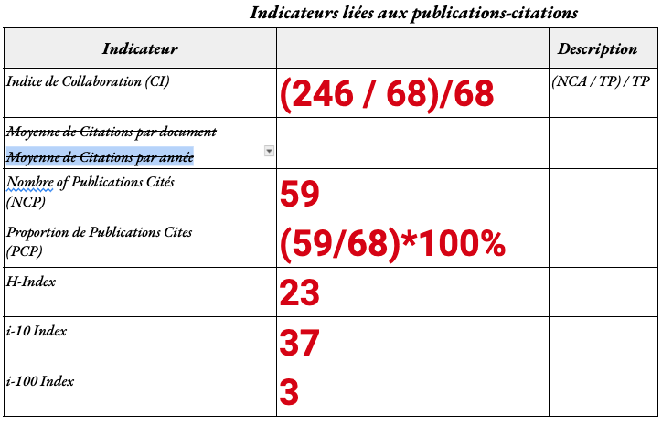
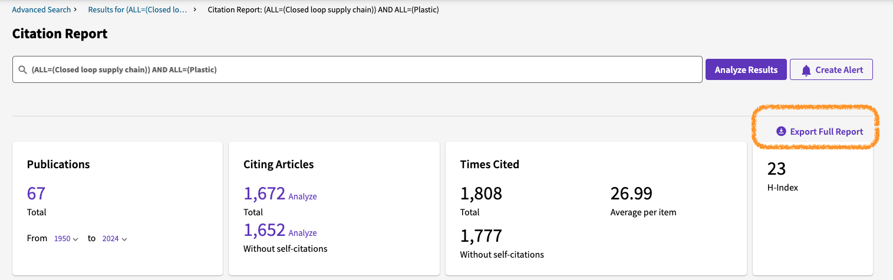
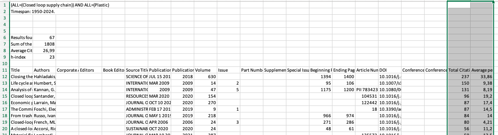
From Research question → Bibliometrie
1. Cartographie
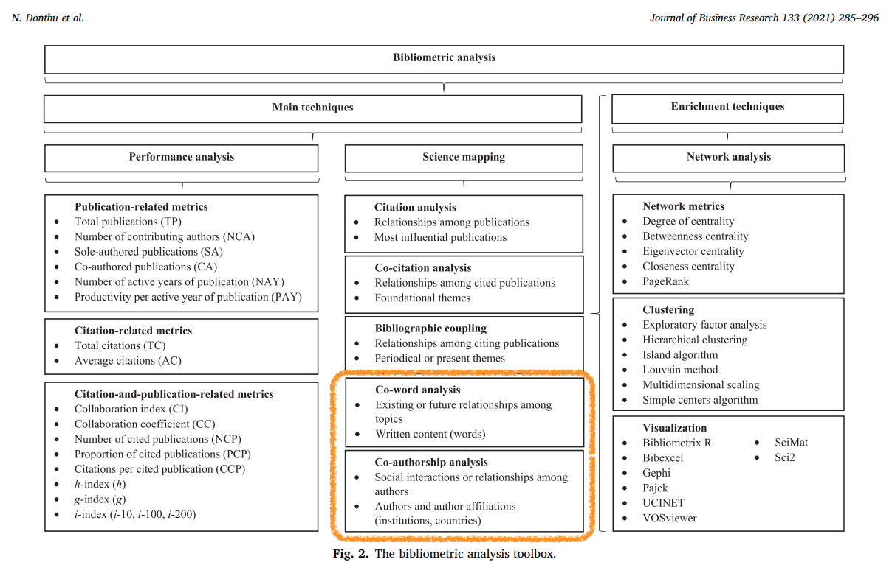
Document sous ARCHE
Source: Donthu, N., Kumar, S., Mukherjee, D., Pandey, N., Lim, W.M., 2021.
How to conduct a bibliometric analysis: An overview and guidelines.
Journal of Business Research 133, 285–296.
The research process
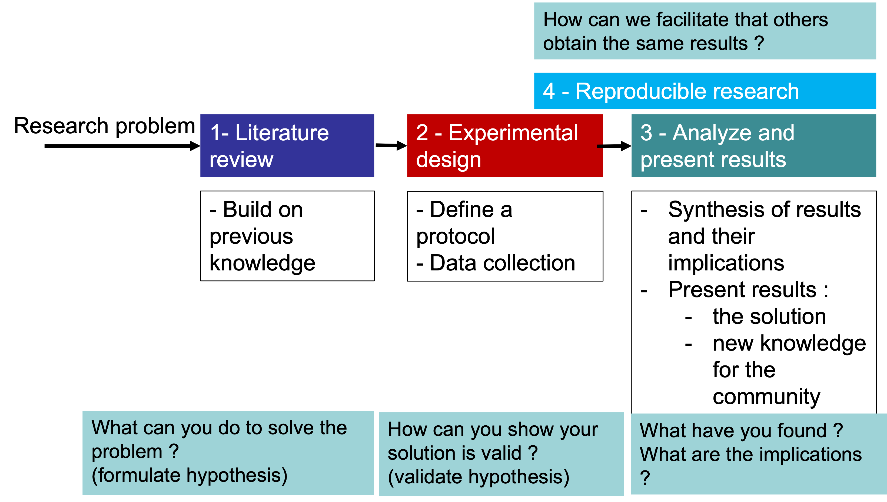
How to do a Literature Review?
Literature review
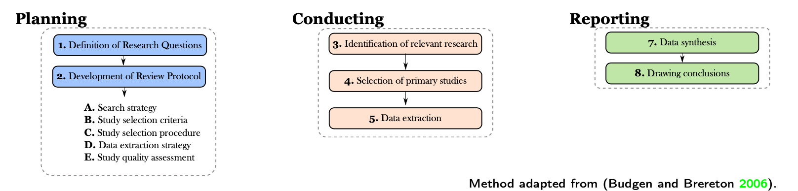
Steps for a Literature Review
Literature review: The Context
Take the time to planning because it has the major impact at the end.
Literature review: Planning
Goal: Identification of material recycling approaches in the Additive Manufacturing contexts (commercial and open-source)
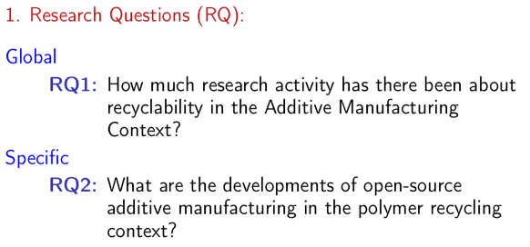
Literature review: Planning
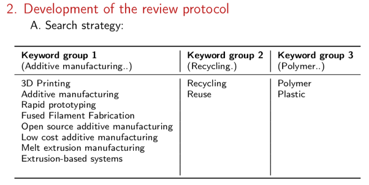
Subjet + Verb + Complement → Topic + Context + Problem
Literature review: Planning
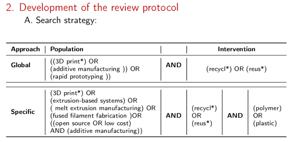
Literature review: Planning
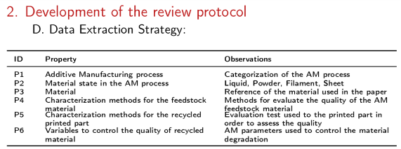
Grid lecture
Literature review: Conducting
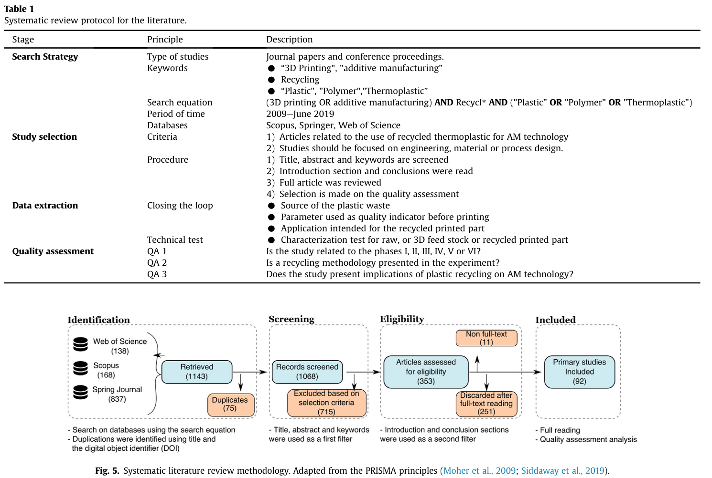
Literature review: Reporting
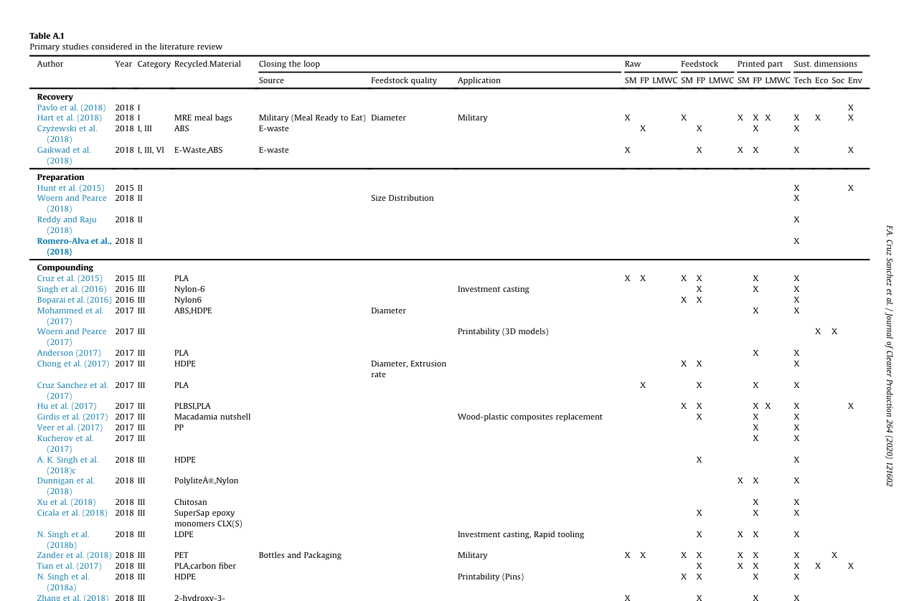
Structure of Literature
- Title
- Abstract
- Introduction
- Literature review
- Methodology
- Results
- Discussion
- Conclusion
- References
Example 1:
A Useful ressource
Siddaway, A.P., Wood, A.M., Hedges, L.V., 2019. How to Do a Systematic Review: A Best Practice Guide for Conducting and Reporting Narrative Reviews, Meta-Analyses, and Meta-Syntheses. Annual Review of Psychology 70, 747–770. https://doi.org/10.1146/annurev-psych-010418-102803
Literature review – Ethics
Report on your literature findings and beware of:
- Purposely misrepresenting the work of other authors.
Plagiarism – the use of another’s original words, arguments, or ideas as though they were your own, even if this is done in good faith, out of carelessness, or out of ignorance.
- Importance of the References (Act III we’ll take a look)
Questions
What kind of type of research can we do?
Agenda for today
Where are we in the research process?
What kind of type of research can we do?
Understanding the paper structure part II
Structuring your paper
Research in the context of France
What kind of type of research can we do?
- Basic Vs. Applied
- Exploratory
- Descriptive
- Causal
What kind of type of research can we do?
- Basic Vs. Applied
- Exploratory
- Descriptive
- Causal
- Not much is known about a particular phenomenon;
- Existing research results are unclear or suffer from serious limitations;
- The topic is highly complex; or
- There is not enough theory available to guide the development of a theoretical framework
e.g: AI and its influence in the future?, Decroissance?
What kind of type of research can we do?
- Basic Vs. Applied
- Exploratory
- Descriptive
- Causal
- Obtain data that describes the topic of interest
- Understand the characteristics of a group in a given situation
- Think systematically about aspects in a given situation
e.g: Social Media Usage Patterns, Workplace Satisfaction Surveys, Consumer Behavior Studies, etc…
What kind of type of research can we do?
- Basic Vs. Applied
- Exploratory
- Descriptive
- Causal
- Whether or not A causes change to B
- X causes variable Y. So, when variable X is removed or altered in some way, problem Y is solved
e.g: Impact of (Educational, Recycling, Motivation, Training …) Interventions, Efficacy of Medical Treatments, Causal loops, etc…
Quantitative vs Qualitative

Big data Vs Thick data
Examples of ERPI Research
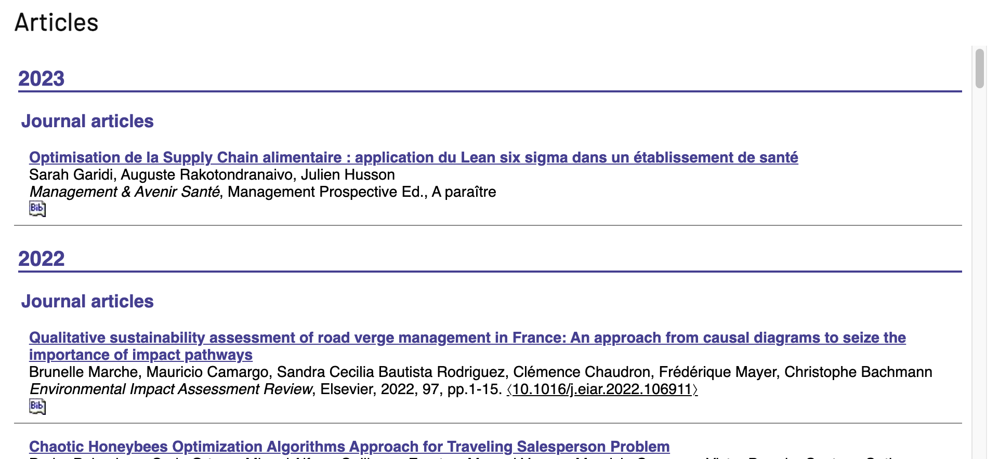
https://erpi.univ-lorraine.fr/publications/articles/
In summary
The Art of Design Research
Research design
Approaches of the
Research design
Creswell, J. W.: Research Design: Qualitative, Quantitative and Mixed Methods Approaches, 2nd edition, Sage Publications, Inc, California, 246 pp., 2003.
The Research Onion
Understanding the paper structure part II
Agenda for today
Where are we in the research process?
What kind of type of research can we do?
Understanding the paper structure part II
Structuring your paper
Research in the context of France
What is a Research Paper?
- Title ✅
- Abstract ✅
- Introduction
- Literature review
- Methodology
- Results
- Discussion
- Conclusions ✅
- References
Méthode AIC
Let’s talk about
ChatGPT on the Scientific arena
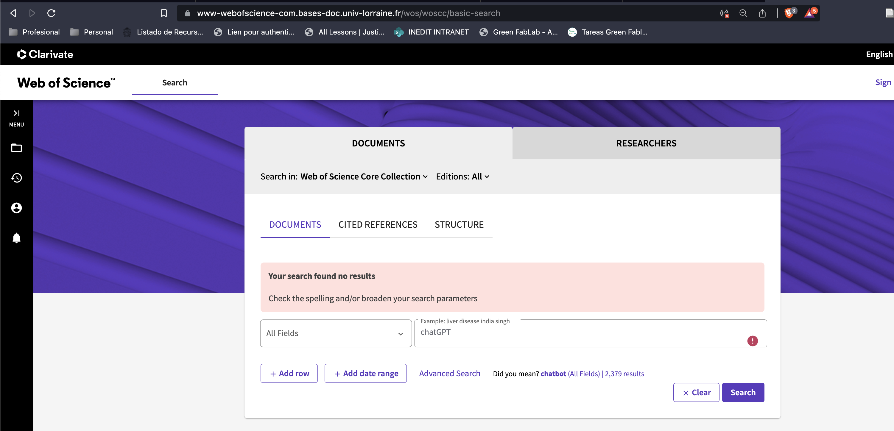
Nothing (In December 2022) ! 😬
ChatGPT on the Scientific arena
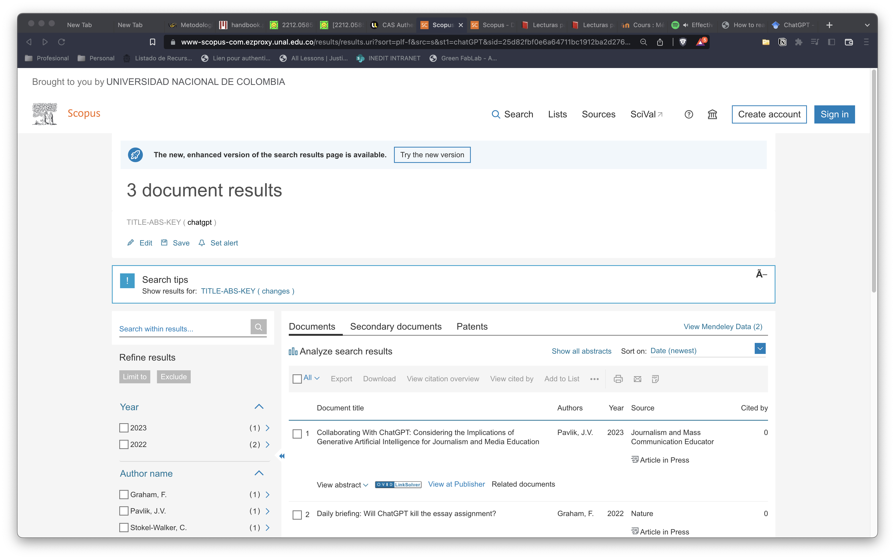
Only 3! 😬 (In december 2022)
ChatGPT on the Scientific arena
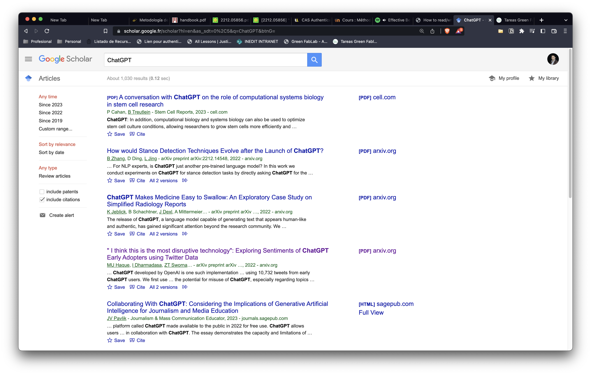
In december 2022
Example of AIC
Haque, M. U., Dharmadasa, I., Sworna, Z. T., Rajapakse, R. N., & Ahmad, H. (2022). .”I think this is the most disruptive technology”: Exploring Sentiments of ChatGPT Early Adopters using Twitter Data. arXiv preprint arXiv:2212.05856.
https://arxiv.org/abs/2212.05856
Before reading.. have an lecture grid in mind ❗
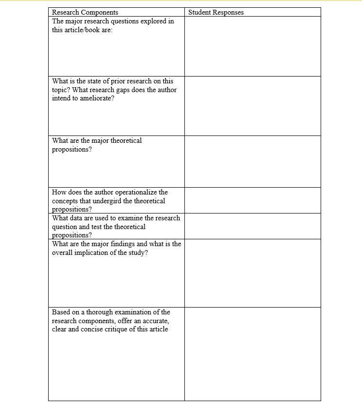
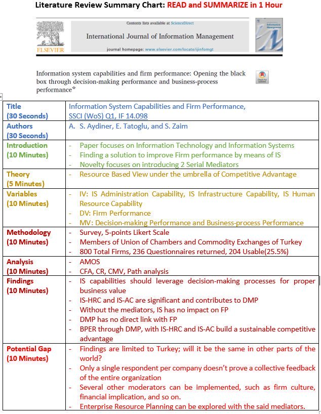
Abstract
What’s the topic?
What’s the problem?
Is it important?
What’s the
research question?
What is the
purpose ?
Implications
for future ?
Introduction
Context
Focus on
the Research object
Hypothesis
Presenting methods
Conclusions
Recall the Purpose
Summarise Results
Perspectives
Reading technique
[1min] [Screening] → Title, Journal, keywords
[5min] [Profiling] → Screening + Abstract
–
- [20min] Focusing → [Profiling] + Introduction + Conclusions
–
- [1hr] In deep → Focusing + All other sections
–
- [2-3 hr] For research → In deep + Reading Grid + References
Structuring your paper
Agenda for today
Where are we in the research process?
What kind of type of research can we do?
Understanding the paper structure part II
Structuring your paper
Research in the context of France
The scientific history
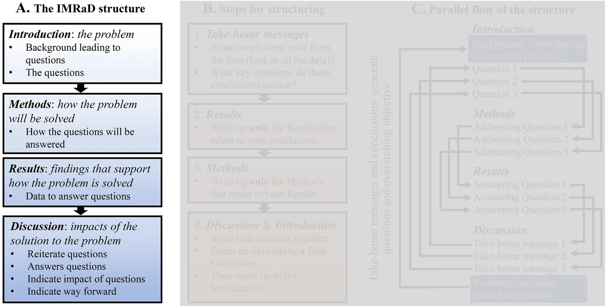
The scientific history
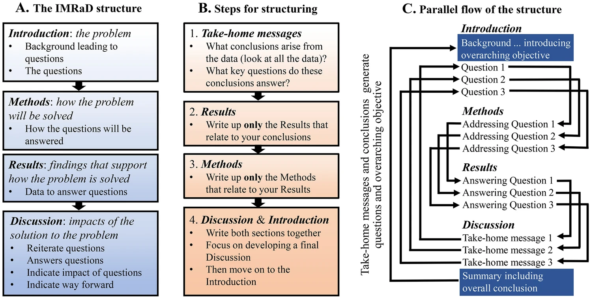
Abstract
Example of Nature:
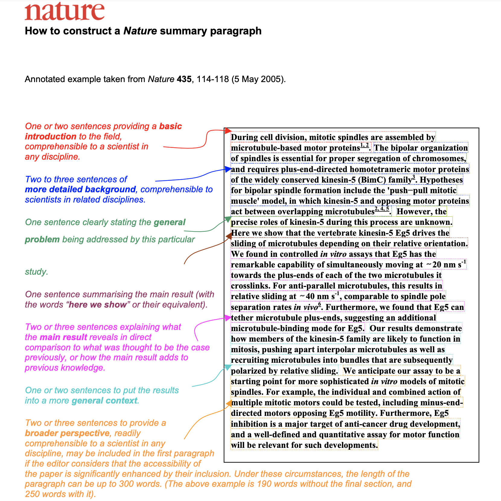
Introduction
- 1er Paragraphe: établir le contexte, introduire le sujet. Il doit établir l’importance du sujet de recherche
- 2ème : établir un lien avec la littérature existante
- 3ème : établir clairement le “Gap to be filled”
- 4émé Expliquer comment on a traité le sujet
- 5èmé :“Annoncer la couleur” des résultats
- Enfin : Décrire la structure de l’article
Methodology
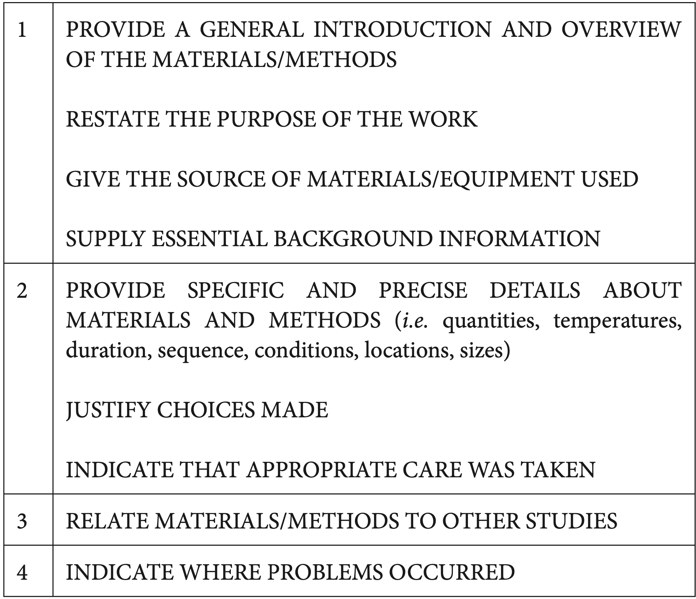
Results
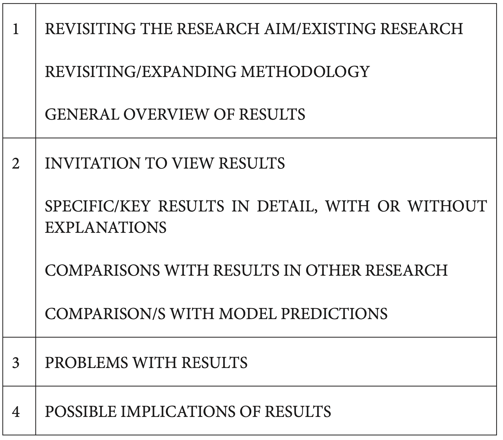
Discussion & Conclusions
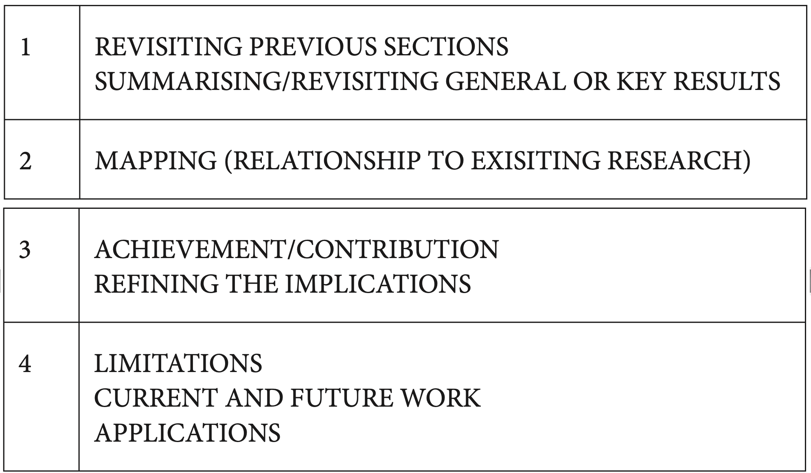
The scientific history
Some web ressources for writing
Research in the context of France
Agenda for today
Where are we in the research process?
What kind of type of research can we do?
Understanding the paper structure part II
Structuring your paper
Research in the context of France
Research Ecosystem in general

Research Ecosystem in France
Teaching and research
- Universities (IUT, Ecoles d’ingénieurs)
- INSA , ENSI , CNAM , …
Private companies (Big/Smee’s)
Sagem; Véolia; PSA Thales
TEA; JEI; FITLE; myXtramile…
Funding Agencies
National & EU - Ministeries - ANR - ADEME
Science and technology observatory (OST)
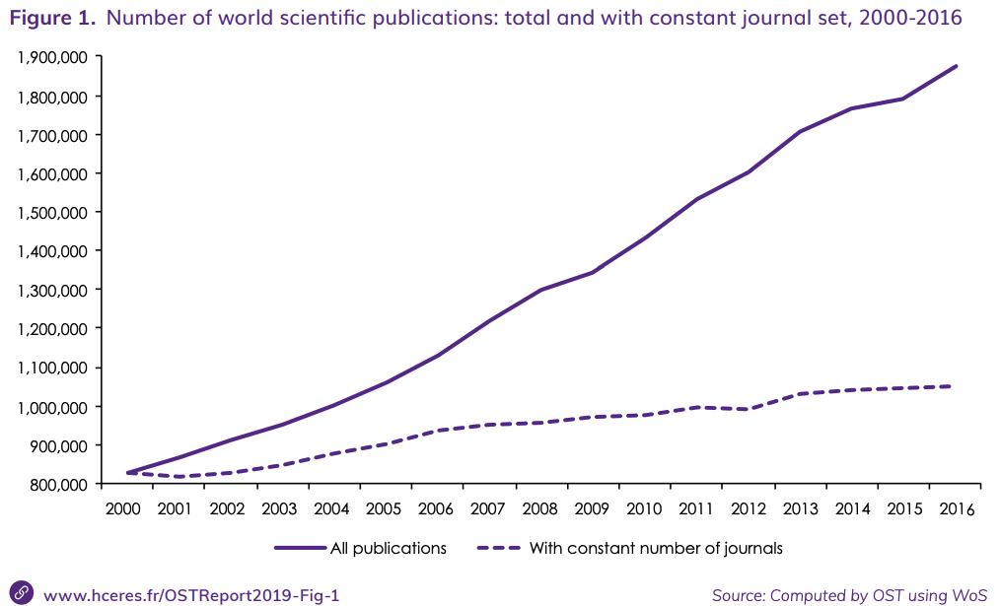
Science and technology observatory (OST)

Science and technology observatory (OST)

Introduction to Scientific Research